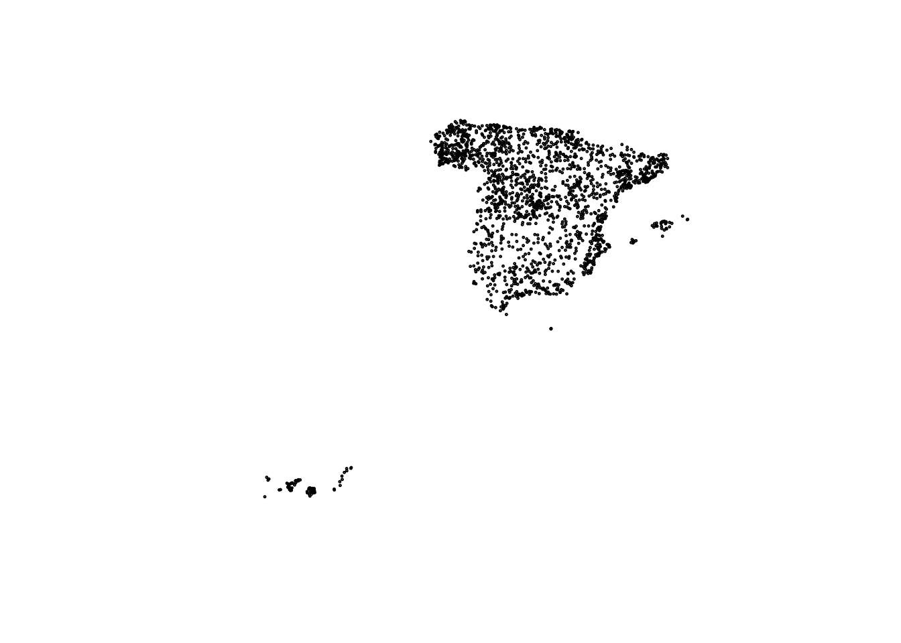
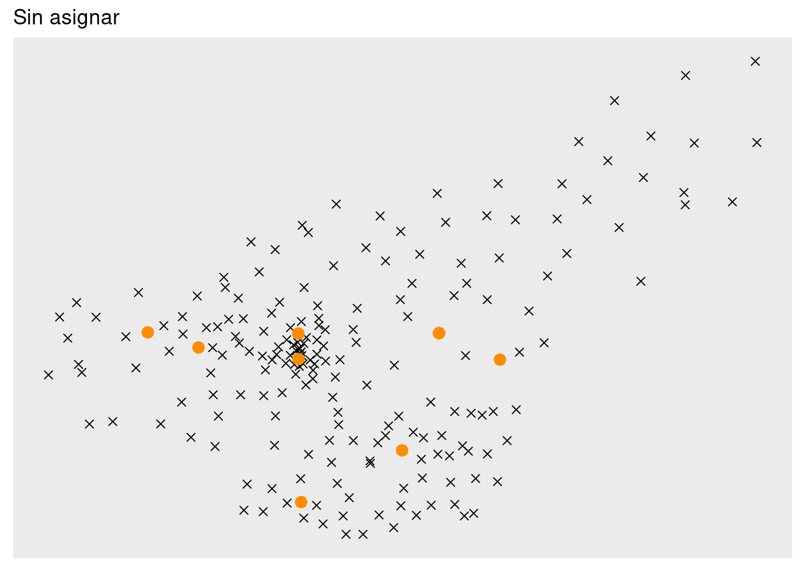
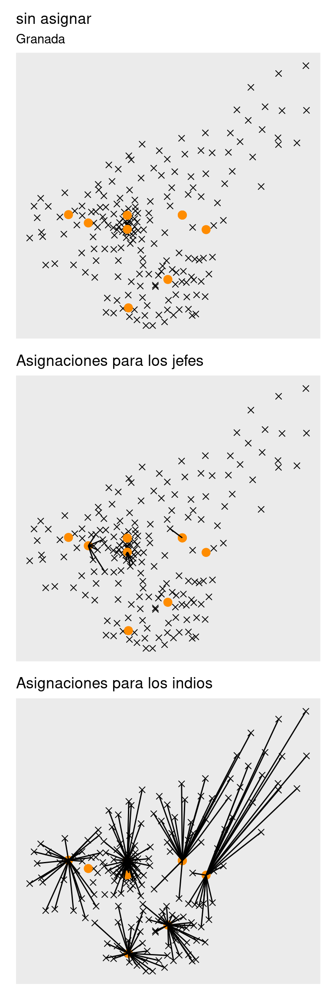
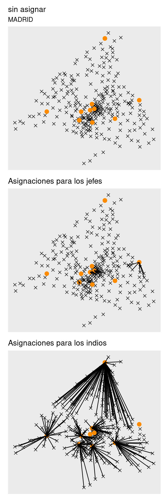
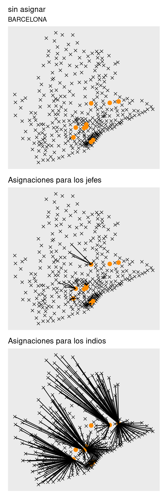
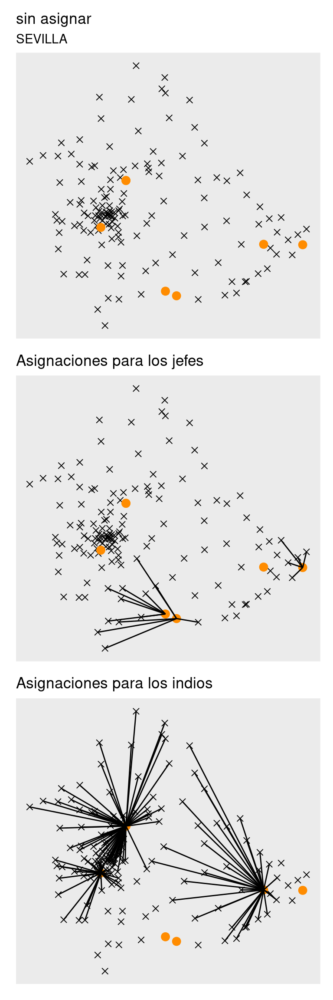
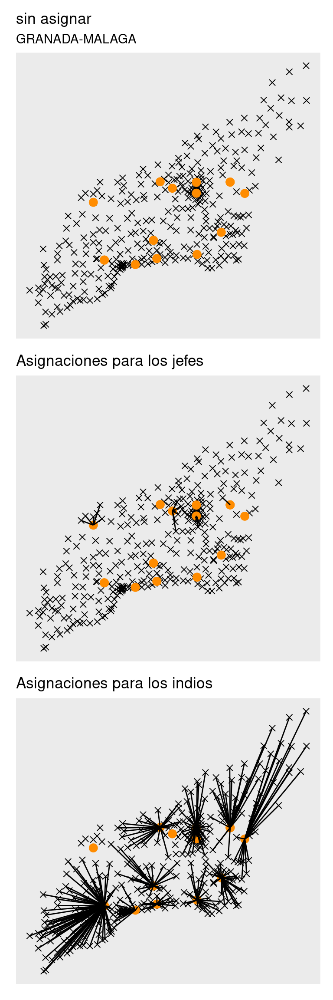

Indios y jefes, IO al servicio del mal.
Introducción
Voy a poner un ejemplo de como utilizar solvers para investigación operativa dentro de R.
Tenemos la siguiente información: * Listado de códigos postales de España con la longitud y latitud del centroide del polígono. * Listado de códigos postales de la ubicación de las sedes de una empresa. * En la empresa hay jefes e indios, no es necesario que haya un jefe por sede.
Se quiere, para cada provincia de España
- Asignar cada código postal de esa provincia a un empleado de la empres (jefe o indio).
- Un mismo código postal no puede estar asignado a más de un empleado.
- En la medida de lo posible asignar a los empleados los códigos postales más cercanos al lugar de su sede.
- A igualdad de distancia entre un código postal y una sede, se debería asignar ese código postal a un indio.
- Ningún indio debe tener asignados menos códigos postales que ningún jefe.
- Los jefes como máximo han de tener 7 códigos postales asignados.
- Los indios como mínimo han de tener 3 códigos postales asignados.
- No puede haber ningún empleado que esté “desasignado”.
Dados estos requisitos debería plantear como es la definición del problema, pero no tengo ganas de ponerme a escribir fórmulas en latex, así que en vez de eso voy a utilizar unos datos simulados y directamente al código..
Carga de datos y crear datos ficticios.
Carga códigos postales
Casualmente, tengo por mi pc un shapefile algo antiguo (de cuando está capa estaba en cartociudad) con la capa de códigos postales de España, la cual si se quiere actualizada vale un dinerillo. correos, 6000 Euros la versión sin actualizaciones.. Bueno, si hacienda y correos somos todos me gustaría al menos poder utilizar esto actualizado sin que me cueste 6k.
Vamos a cargar la capa, obtener los centroides, pasar la geometría a longitud y latitud
library(tidyverse)## ── Attaching packages ─────────────────────────────────────── tidyverse 1.3.2 ──
## ✔ ggplot2 3.3.6 ✔ purrr 0.3.4
## ✔ tibble 3.1.8 ✔ dplyr 1.0.9
## ✔ tidyr 1.2.0 ✔ stringr 1.4.0
## ✔ readr 2.1.2 ✔ forcats 0.5.1
## ── Conflicts ────────────────────────────────────────── tidyverse_conflicts() ──
## ✖ dplyr::filter() masks stats::filter()
## ✖ dplyr::lag() masks stats::lag()library(sf)## Linking to GEOS 3.8.0, GDAL 3.0.4, PROJ 6.3.1; sf_use_s2() is TRUEcod_postales_raw <- readRDS(here::here("data/cp_boundaries.rds")) %>%
select(-cp_num, -cp_2_num)
head(cod_postales_raw)## Simple feature collection with 6 features and 3 fields
## Geometry type: MULTIPOLYGON
## Dimension: XY
## Bounding box: xmin: -1536953 ymin: 3373964 xmax: -41802.13 ymax: 5247186
## Projected CRS: WGS 84 / Pseudo-Mercator
## cp cp_2 area_m2 geometry
## 1 35560 35 187875455 MULTIPOLYGON (((-1518970 33...
## 2 27330 27 6659413 MULTIPOLYGON (((-821864.3 5...
## 3 46680 46 69190773 MULTIPOLYGON (((-51610.46 4...
## 4 49706 49 90229134 MULTIPOLYGON (((-641488.4 5...
## 5 21120 21 20068648 MULTIPOLYGON (((-776955.2 4...
## 6 16623 16 132859998 MULTIPOLYGON (((-256256.7 4...Pintamos algunos códigos
plot(st_geometry(cod_postales_raw[1:2000, ]))
Para obtener los centroides, usamos la función st_centroid y pasamos la capa de polígonos a una de puntos
cod_postales_raw <- st_centroid(cod_postales_raw)## Warning in st_centroid.sf(cod_postales_raw): st_centroid assumes attributes are
## constant over geometries of xhead(cod_postales_raw)## Simple feature collection with 6 features and 3 fields
## Geometry type: POINT
## Dimension: XY
## Bounding box: xmin: -1525406 ymin: 3382025 xmax: -47782.92 ymax: 5245455
## Projected CRS: WGS 84 / Pseudo-Mercator
## cp cp_2 area_m2 geometry
## 1 35560 35 187875455 POINT (-1525406 3382025)
## 2 27330 27 6659413 POINT (-823274.9 5245455)
## 3 46680 46 69190773 POINT (-47782.92 4752325)
## 4 49706 49 90229134 POINT (-637415.5 5057096)
## 5 21120 21 20068648 POINT (-778872.1 4479315)
## 6 16623 16 132859998 POINT (-262034.3 4818194)plot(st_geometry(cod_postales_raw[1:2000, ]), cex = 0.2)
Ahora extraemos de la geometría la longitud y latitud. Para eso hay que transformar la geometría.
cod_postales_raw <- cod_postales_raw %>%
st_transform("+proj=longlat +ellps=WGS84 +datum=WGS84")
cod_postales <- cod_postales_raw %>%
mutate(
centroide_longitud = unlist(map(geometry, 1)),
centroide_latitud = unlist(map(geometry, 2))
) %>%
st_drop_geometry() %>% # quitamos la geometría y nos quedamos solo con la longitud y latitud
rename(
cod_postal = cp,
cod_prov = cp_2
) %>%
filter(!is.na(centroide_longitud)) # tenía un polígono con NAS
head(cod_postales)## cod_postal cod_prov area_m2 centroide_longitud centroide_latitud
## 1 35560 35 187875455 -13.7029565 29.05011
## 2 27330 27 6659413 -7.3956047 42.56144
## 3 46680 46 69190773 -0.4292412 39.21368
## 4 49706 49 90229134 -5.7260007 41.30272
## 5 21120 21 20068648 -6.9967272 37.28791
## 6 16623 16 132859998 -2.3538946 39.67063Por otro lado me interesa añadir el literal de provincia, tengo una tabla extraída del INE con la correspondencia entre cod_prov y el literal
provincia <- read_csv(here::here("data/codprov.csv"))## Rows: 52 Columns: 2
## ── Column specification ────────────────────────────────────────────────────────
## Delimiter: ","
## chr (2): CODIGO, LITERAL
##
## ℹ Use `spec()` to retrieve the full column specification for this data.
## ℹ Specify the column types or set `show_col_types = FALSE` to quiet this message.head(provincia)## # A tibble: 6 × 2
## CODIGO LITERAL
## <chr> <chr>
## 1 02 Albacete
## 2 03 Alicante/Alacant
## 3 04 Almería
## 4 01 Araba/Álava
## 5 33 Asturias
## 6 05 ÁvilaNormalizo a mayúsculas y sin tildes y se lo pego a los códigos postales
provincia <- provincia %>%
mutate(provincia = toupper(stringi::stri_trans_general(LITERAL, "Latin-ASCII")))
cod_postales <- cod_postales %>%
left_join(provincia %>%
select(
CODIGO,
provincia
),
by = c("cod_prov" = "CODIGO")
)
dim(cod_postales)## [1] 10808 6head(cod_postales %>%
select(provincia, cod_prov, everything()))## provincia cod_prov cod_postal area_m2 centroide_longitud
## 1 PALMAS, LAS 35 35560 187875455 -13.7029565
## 2 LUGO 27 27330 6659413 -7.3956047
## 3 VALENCIA/VALENCIA 46 46680 69190773 -0.4292412
## 4 ZAMORA 49 49706 90229134 -5.7260007
## 5 HUELVA 21 21120 20068648 -6.9967272
## 6 CUENCA 16 16623 132859998 -2.3538946
## centroide_latitud
## 1 29.05011
## 2 42.56144
## 3 39.21368
## 4 41.30272
## 5 37.28791
## 6 39.67063Datos ficticios de las sedes de las empresas
Lo que voy a hacer es seleccionar aleatoriamente un número de códigos postales en cada provincia, que serán las sedes de la empresa. En cada provincia pongo al menos a un empleado de tipo = “jefe”. Luego, reparto de forma aleatoria entre los códigos postales que han sido elegidos como sedes otros 120 jefes y 480 indios.
set.seed(155)
## En cada provincia nos quedamos con un 6% de códigos postales
sedes_alea <- cod_postales %>%
group_by(provincia) %>%
slice_sample(prop = 0.06)
# en cada provincia al menos un jefe y resto de empleados de forma aleatoria, en las diferentes sedes elegidas
personal <- bind_rows(
sedes_alea %>%
select(provincia, cod_postal) %>%
group_by(provincia) %>%
slice_sample(n = 1) %>%
ungroup() %>%
select(cod_postal) %>%
mutate(tipo = "jefe"),
tibble(
tipo = c(rep("jefe", 120), rep("indio", 360)),
cod_postal = sample(sedes_alea$cod_postal, size = 480, replace = TRUE)
)
)Creamos data set sedes
sedes <- personal %>%
left_join(sedes_alea)## Joining, by = "cod_postal"dim(sedes)## [1] 530 7sample_n(sedes, 7)## # A tibble: 7 × 7
## cod_postal tipo cod_prov area_m2 centroide_longitud centroide_la…¹ provi…²
## <fct> <chr> <chr> <dbl> <dbl> <dbl> <chr>
## 1 37660 indio 37 36448279. -5.99 40.5 SALAMA…
## 2 41770 jefe 41 183345907. -5.55 37.0 SEVILLA
## 3 08011 jefe 08 968836. 2.16 41.4 BARCEL…
## 4 34479 indio 34 49891663. -4.42 42.4 PALENC…
## 5 34859 indio 34 118812672. -4.59 42.8 PALENC…
## 6 09348 indio 09 249695400. -3.61 42.0 BURGOS
## 7 29750 indio 29 14389642. -4.04 36.8 MALAGA
## # … with abbreviated variable names ¹centroide_latitud, ²provinciaIO al servicio del mal en GRANADA
Como ejemplo, vamos a ver como sería para Granada
cod_postales_granada <- cod_postales %>%
filter(provincia == "GRANADA") %>%
mutate(id = row_number())
sedes_granada <- sedes %>%
filter(provincia == "GRANADA") %>%
arrange(desc(tipo)) %>%
mutate(id_sede = row_number())
sedes_granada## # A tibble: 11 × 8
## cod_postal tipo cod_prov area_m2 centroide_long…¹ centr…² provi…³ id_sede
## <fct> <chr> <chr> <dbl> <dbl> <dbl> <chr> <int>
## 1 18328 jefe 18 58574459. -3.87 37.2 GRANADA 1
## 2 18006 jefe 18 3245912. -3.61 37.2 GRANADA 2
## 3 18516 jefe 18 146541813. -3.24 37.2 GRANADA 3
## 4 18516 jefe 18 146541813. -3.24 37.2 GRANADA 4
## 5 18197 indio 18 10003524. -3.61 37.2 GRANADA 5
## 6 18516 indio 18 146541813. -3.24 37.2 GRANADA 6
## 7 18414 indio 18 40411565. -3.34 36.9 GRANADA 7
## 8 18197 indio 18 10003524. -3.61 37.2 GRANADA 8
## 9 18369 indio 18 17670871. -4.01 37.2 GRANADA 9
## 10 18611 indio 18 33542783. -3.60 36.8 GRANADA 10
## 11 18514 indio 18 110524485. -3.08 37.2 GRANADA 11
## # … with abbreviated variable names ¹centroide_longitud, ²centroide_latitud,
## # ³provinciaEs importante haber ordenado por tipo , porque vamos a utilizar el mismo índice j para empleados jefe y empleados indios.
Ahora definimos: * m como el número de empleados en las sedes de Granada * n como el número de códigos postales a asignar en Granada * n_sedes como el número de sedes * njefes como el número de jefes * n_indios como el número de indios
m <- nrow(sedes_granada)
n <- nrow(cod_postales_granada)
n_sedes <- length(unique(sedes_granada$cod_postal))
njefes <- sedes_granada %>%
filter(tipo == "jefe") %>%
count() %>%
pull(n)
n_indios <- m - njefesNecesitamos definir una función de distancia entre los códigos postales a asignar y las sedes. Para eso usamos la distancia Haversine que está implementada en la librería geosphere. Y aquí ya introducimos uno de los requerimientos. Básicamente aumentamos la distancia un 10% si el empleado es un jefe, de forma que sea peor asignarle ese código postal al jefe en términos de minimizar el total de distancias.
transportcost_granada <- function(i, j) {
cliente <- cod_postales_granada[i, ]
comercial <- sedes_granada[j, ]
distancia <-
geosphere::distHaversine(
c(cliente$centroide_longitud, cliente$centroide_latitud),
c(comercial$centroide_longitud, comercial$centroide_latitud)
)
if (comercial[, "tipo"] == "jefe") {
distancia <- distancia * 1.1
}
return(distancia / 1000) # devolvemos la disancia en km
}
# distancia entre sede 1 y empleado 3
transportcost_granada(1, 3)## [1] 51.54738Pintamos los códigos postales y las sedes. Los granadinos reconoceremos la forma de la provincia.
p <-
ggplot(
cod_postales_granada,
aes(centroide_longitud, centroide_latitud)
) +
geom_point(size = rel(2), shape = 4) +
geom_point(
data = sedes_granada,
size = rel(3),
color = "darkorange"
) +
theme(
axis.title = element_blank(),
axis.ticks = element_blank(),
axis.text = element_blank(),
panel.grid = element_blank()
)
p + ggtitle("Sin asignar")
Optimización
Para optimizar el problema vamos a usar la librería ompr que permite plantear el problema de optimización lineal entera de forma sencilla, y se conecta a la librería ROI que es la que al final llama al solver. Como solver vamos a utilizar glpk que es software libre y lo suficientemente bueno para este ejemplo.
library(ompr)
library(ompr.roi)
library(ROI.plugin.glpk)
library(patchwork) # pa unir los ggplots resultantesDefinimos el modelo
mip_model_granada <- MIPModel() %>%
# variable indicadora que indica si una tienda i se asigna a comercial j
add_variable(x[i, j], i = 1:n, j = 1:m, type = "binary") %>%
# Minimizar el objetivo de distancia
set_objective(sum_over(transportcost_granada(i, j) * x[i, j], i = 1:n, j = 1:m), "min") %>%
# cada tienda (código postal) solo debe ir a un comerciial. el comercial puede atender varios
add_constraint(sum_over(x[i, j], j = 1:m) == 1, i = 1:n) %>%
# todo el mundo tiene que atender al minimo a una tienda
add_constraint(sum_over(x[i, j], i = 1:n) >= 1, j = 1:m) %>%
# Los jefes curran menos, como máximo 7 tiendas
add_constraint(sum_over(x[i, j], i = 1:n) <= 7, j = 1:njefes) %>%
#
# # Los indios al menos atienden a 3 tiendas
add_constraint(sum_over(x[i, j], i = 1:n) >= 3, j = (njefes + 1):m) %>%
# para no sobrecargar mucho a los indios, les pongo un máximo que sea 1.5 veces el núemro de tiendas entre total currantes (jefes + indios)
add_constraint(sum_over(x[i, j], i = 1:n) <= round(1.5 * n / m), j = (njefes + 1):m) %>%
add_constraint(sum_over(x[i, j], i = 1:n) >= sum_over(x[i, k], i = 1:n), j = (njefes + 1):m, k = 1:njefes)Algunas aclaraciones de la sintaxis anterior.
Nuestra variable auxilizar es
\(X_{i,j}\)dónde la i son los códigos postales y la j cada empleado.Se trata de minimizar la suma total de distancias cuando se asigna un código postal a un empleado, para todos los códigos postales y todos los empleados.
La restricción
add_constraint(sum_over(x[i, j], j = 1:m) == 1 , i = 1:n)si nos fijamos en el sum_over significa sumar en j (empleados) para cada código postal (i) y que esa suma valga 1. Es decir, para cada código postal (i) sólo se permite que sea asignado a un empleadoadd_constraint(sum_over(x[i, j], i = 1:n) >= 1 , j = 1:m)Que para cada empleado (j) la suma de todos los códigos postales que se le asignen sea mayor o igual que 1. Vamos que no se quede ninguno ocioso.add_constraint(sum_over( x[i,j], i = 1:n) <= 7, j = 1:njefes)por eso ordeanmos por tipo para que el índice 1:njefes corresponda a los empleados jefes, esta restricción asegura que a un jefe no se le asignen más de 7 códigos postales.add_constraint(sum_over( x[i,j], i = 1:n) >= 3 , j = (njefes +1):m)Mínimo 3 códigos postales para los indios.add_constraint(sum_over( x[i,j], i = 1:n) <= round(1.5 * n/m) , j = (njefes +1):m)Esta restricción intenta equilibrar el número de asignaciones para los indios, de forma que como mucho a un empleado tenga 1.5 veces la media de códigos postales por empleado.add_constraint(sum_over( x[i,j], i = 1:n) >= sum_over( x[i,k], i = 1:n) , j = (njefes +1):m, k = 1:njefes)En esta restricción es dónde aseguramos que ningún empleado tenga menos asignaciones que ningún jefe, por eso se ha usado el índice k.
Pues el problema tiene 2200 variables (todas binarias) y 257 restricciones.
mip_model_granada## Mixed integer linear optimization problem
## Variables:
## Continuous: 0
## Integer: 0
## Binary: 2200
## Model sense: minimize
## Constraints: 257Resolvemos con glpk
result_granada <- solve_model(mip_model_granada, with_ROI(solver = "glpk", verbose = TRUE))## <SOLVER MSG> ----
## GLPK Simplex Optimizer, v4.65
## 257 rows, 2200 columns, 19200 non-zeros
## 0: obj = 0.000000000e+00 inf = 2.320e+02 (218)
## 397: obj = 9.427540716e+03 inf = 5.627e-13 (0) 1
## * 870: obj = 3.723682515e+03 inf = 0.000e+00 (0) 2
## OPTIMAL LP SOLUTION FOUND
## GLPK Integer Optimizer, v4.65
## 257 rows, 2200 columns, 19200 non-zeros
## 2200 integer variables, all of which are binary
## Integer optimization begins...
## Long-step dual simplex will be used
## + 870: mip = not found yet >= -inf (1; 0)
## + 870: >>>>> 3.723682515e+03 >= 3.723682515e+03 0.0% (1; 0)
## + 870: mip = 3.723682515e+03 >= tree is empty 0.0% (0; 1)
## INTEGER OPTIMAL SOLUTION FOUND
## <!SOLVER MSG> ----result_granada## Status: success
## Objective value: 3723.683Y ahora procedemos a ver las asignaciones. Para eso utilizamos la función get_solution que nos va a devolver la solución obtenida para nuestra variable \(X_{i,j}\)
matching <- result_granada %>%
get_solution(x[i, j]) %>%
select(i, j, value) %>%
filter(value > 0) # nons quedamos con las asignaciones
matching## i j value
## 1 16 1 1
## 2 27 1 1
## 3 55 1 1
## 4 68 1 1
## 5 119 1 1
## 6 157 1 1
## 7 173 1 1
## 8 13 2 1
## 9 37 2 1
## 10 96 2 1
## 11 113 2 1
## 12 161 2 1
## 13 169 2 1
## 14 178 2 1
## 15 141 3 1
## 16 34 4 1
## 17 1 5 1
## 18 8 5 1
## 19 23 5 1
## 20 30 5 1
## 21 32 5 1
## 22 71 5 1
## 23 98 5 1
## 24 102 5 1
## 25 108 5 1
## 26 112 5 1
## 27 117 5 1
## 28 120 5 1
## 29 122 5 1
## 30 124 5 1
## 31 130 5 1
## 32 132 5 1
## 33 134 5 1
## 34 137 5 1
## 35 138 5 1
## 36 140 5 1
## 37 149 5 1
## 38 170 5 1
## 39 182 5 1
## 40 191 5 1
## 41 192 5 1
## 42 194 5 1
## 43 198 5 1
## 44 10 6 1
## 45 15 6 1
## 46 20 6 1
## 47 65 6 1
## 48 69 6 1
## 49 82 6 1
## 50 83 6 1
## 51 86 6 1
## 52 87 6 1
## 53 92 6 1
## 54 93 6 1
## 55 116 6 1
## 56 128 6 1
## 57 133 6 1
## 58 135 6 1
## 59 144 6 1
## 60 151 6 1
## 61 153 6 1
## 62 163 6 1
## 63 168 6 1
## 64 174 6 1
## 65 177 6 1
## 66 190 6 1
## 67 199 6 1
## 68 2 7 1
## 69 5 7 1
## 70 6 7 1
## 71 7 7 1
## 72 11 7 1
## 73 12 7 1
## 74 17 7 1
## 75 24 7 1
## 76 26 7 1
## 77 28 7 1
## 78 31 7 1
## 79 44 7 1
## 80 48 7 1
## 81 53 7 1
## 82 56 7 1
## 83 72 7 1
## 84 77 7 1
## 85 91 7 1
## 86 104 7 1
## 87 105 7 1
## 88 131 7 1
## 89 147 7 1
## 90 156 7 1
## 91 166 7 1
## 92 171 7 1
## 93 187 7 1
## 94 193 7 1
## 95 14 8 1
## 96 39 8 1
## 97 40 8 1
## 98 47 8 1
## 99 54 8 1
## 100 59 8 1
## 101 60 8 1
## 102 62 8 1
## 103 70 8 1
## 104 73 8 1
## 105 75 8 1
## 106 78 8 1
## 107 79 8 1
## 108 84 8 1
## 109 85 8 1
## 110 90 8 1
## 111 97 8 1
## 112 99 8 1
## 113 101 8 1
## 114 109 8 1
## 115 110 8 1
## 116 118 8 1
## 117 126 8 1
## 118 167 8 1
## 119 185 8 1
## 120 189 8 1
## 121 195 8 1
## 122 9 9 1
## 123 25 9 1
## 124 29 9 1
## 125 33 9 1
## 126 35 9 1
## 127 46 9 1
## 128 50 9 1
## 129 51 9 1
## 130 57 9 1
## 131 63 9 1
## 132 67 9 1
## 133 74 9 1
## 134 80 9 1
## 135 88 9 1
## 136 103 9 1
## 137 107 9 1
## 138 111 9 1
## 139 114 9 1
## 140 115 9 1
## 141 125 9 1
## 142 136 9 1
## 143 162 9 1
## 144 172 9 1
## 145 175 9 1
## 146 179 9 1
## 147 180 9 1
## 148 196 9 1
## 149 3 10 1
## 150 4 10 1
## 151 22 10 1
## 152 36 10 1
## 153 38 10 1
## 154 45 10 1
## 155 49 10 1
## 156 61 10 1
## 157 64 10 1
## 158 76 10 1
## 159 89 10 1
## 160 106 10 1
## 161 127 10 1
## 162 129 10 1
## 163 139 10 1
## 164 143 10 1
## 165 148 10 1
## 166 152 10 1
## 167 154 10 1
## 168 155 10 1
## 169 159 10 1
## 170 176 10 1
## 171 181 10 1
## 172 183 10 1
## 173 186 10 1
## 174 18 11 1
## 175 19 11 1
## 176 21 11 1
## 177 41 11 1
## 178 42 11 1
## 179 43 11 1
## 180 52 11 1
## 181 58 11 1
## 182 66 11 1
## 183 81 11 1
## 184 94 11 1
## 185 95 11 1
## 186 100 11 1
## 187 121 11 1
## 188 123 11 1
## 189 142 11 1
## 190 145 11 1
## 191 146 11 1
## 192 150 11 1
## 193 158 11 1
## 194 160 11 1
## 195 164 11 1
## 196 165 11 1
## 197 184 11 1
## 198 188 11 1
## 199 197 11 1
## 200 200 11 1Ahora vemos cuántas asignaciones tiene cada empleado y pintamos los resultados
asignaciones <- matching %>%
group_by(j) %>%
summarise(asignaciones = sum(value)) %>%
arrange(desc(asignaciones)) %>%
left_join(sedes_granada, by = c("j" = "id_sede"))
asignaciones## # A tibble: 11 × 9
## j asignaciones cod_postal tipo cod_prov area_m2 centr…¹ centr…² provi…³
## <int> <dbl> <fct> <chr> <chr> <dbl> <dbl> <dbl> <chr>
## 1 5 27 18197 indio 18 1.00e7 -3.61 37.2 GRANADA
## 2 7 27 18414 indio 18 4.04e7 -3.34 36.9 GRANADA
## 3 8 27 18197 indio 18 1.00e7 -3.61 37.2 GRANADA
## 4 9 27 18369 indio 18 1.77e7 -4.01 37.2 GRANADA
## 5 11 27 18514 indio 18 1.11e8 -3.08 37.2 GRANADA
## 6 10 25 18611 indio 18 3.35e7 -3.60 36.8 GRANADA
## 7 6 24 18516 indio 18 1.47e8 -3.24 37.2 GRANADA
## 8 1 7 18328 jefe 18 5.86e7 -3.87 37.2 GRANADA
## 9 2 7 18006 jefe 18 3.25e6 -3.61 37.2 GRANADA
## 10 3 1 18516 jefe 18 1.47e8 -3.24 37.2 GRANADA
## 11 4 1 18516 jefe 18 1.47e8 -3.24 37.2 GRANADA
## # … with abbreviated variable names ¹centroide_longitud, ²centroide_latitud,
## # ³provinciaplot_assignment <- matching %>%
inner_join(cod_postales_granada, by = c("i" = "id")) %>%
inner_join(sedes_granada, by = c("j" = "id_sede"), suffix = c("_clientes", "_comerciales"))
p_jefes <- p +
geom_segment(
data = plot_assignment %>%
filter(tipo == "jefe"),
aes(
x = centroide_longitud_comerciales,
y = centroide_latitud_comerciales,
xend = centroide_longitud_clientes,
yend = centroide_latitud_clientes
)
) +
ggtitle(paste0("Asignaciones para los jefes"))
p_indios <- p +
geom_segment(
data = plot_assignment %>%
filter(tipo == "indio"),
aes(
x = centroide_longitud_comerciales,
y = centroide_latitud_comerciales,
xend = centroide_longitud_clientes,
yend = centroide_latitud_clientes
)
) +
ggtitle(paste0("Asignaciones para los indios"))
p_or <- p +
labs(
title = "sin asignar",
subtitle = "Granada"
)
p_final <- p_or / p_jefes / p_indios
p_final
IO al servicio del mal eligiendo provincia
Creo función (francamente mejorable y modularizable) para poder elegir provincia o provincias
get_asignaciones_x_provincia <- function(cod_postales = cod_postales, sedes = sedes,
provincia_sel = "MADRID", plot = TRUE, ...) {
cod_postales_filt <- cod_postales %>%
filter(provincia %in% provincia_sel) %>%
mutate(id = row_number())
sedes_filt <- sedes %>%
filter(provincia %in% provincia_sel) %>%
arrange(desc(tipo)) %>%
mutate(id_sede = row_number())
m <- nrow(sedes_filt)
n <- nrow(cod_postales_filt)
n_sedes <- length(unique(sedes_filt$cod_postal))
njefes <- sedes_filt %>%
filter(tipo == "jefe") %>%
count() %>%
pull(n)
n_indios <- m - njefes
transportcost <- function(i, j) {
cliente <- cod_postales_filt[i, ]
comercial <- sedes_filt[j, ]
distancia <- geosphere::distHaversine(
c(cliente$centroide_longitud, cliente$centroide_latitud),
c(comercial$centroide_longitud, comercial$centroide_latitud)
)
if (comercial[, "tipo"] == "jefe") distancia <- distancia * 1.1
return(distancia / 1000)
}
p <- ggplot(cod_postales_filt, aes(centroide_longitud, centroide_latitud)) +
geom_point(size = rel(2), shape = 4) +
geom_point(data = sedes_filt, size = rel(3), color = "darkorange") +
# scale_x_continuous(limits = c(0, grid_size+1)) +
# scale_y_continuous(limits = c(0, grid_size+1)) +
theme(
axis.title = element_blank(),
axis.ticks = element_blank(),
axis.text = element_blank(), panel.grid = element_blank()
)
mip_model <- MIPModel() %>%
# variable indicadora que indica si una tienda i se asigna a comercial j
add_variable(x[i, j], i = 1:n, j = 1:m, type = "binary") %>%
# Minimizar el objetivo de distancia
set_objective(sum_over(transportcost(i, j) * x[i, j], i = 1:n, j = 1:m), "min") %>%
# cada tienda (código postal) solo debe ir a un comerciial. el comercial puede atender varios
add_constraint(sum_over(x[i, j], j = 1:m) == 1, i = 1:n) %>%
# todo el mundo tiene que atender al minimo a una tienda
add_constraint(sum_over(x[i, j], i = 1:n) >= 1, j = 1:m) %>%
# %>%
# Los jefes curran menos, como máximo 7 tiendas
add_constraint(sum_over(x[i, j], i = 1:n) <= 7, j = 1:njefes) %>%
#
# # Los indios al menos atienden a 3 tiendas
add_constraint(sum_over(x[i, j], i = 1:n) >= 3, j = (njefes + 1):m) %>%
# para no sobrecargar mucho a los indios, les pongo un máximo que sea 1.5 veces el núemro de tiendas entre total currantes (jefes + indios)
add_constraint(sum_over(x[i, j], i = 1:n) <= round(1.5 * n / m), j = (njefes + 1):m) %>%
add_constraint(sum_over(x[i, j], i = 1:n) >= sum_over(x[i, k], i = 1:n), j = (njefes + 1):m, k = 1:njefes)
result2 <- solve_model(mip_model, with_ROI(solver = "glpk", verbose = TRUE))
matching <- result2 %>%
get_solution(x[i, j]) %>%
select(i, j, value) %>%
filter(value > 0)
asignaciones <- matching %>%
group_by(j) %>%
summarise(asignaciones = sum(value)) %>%
arrange(desc(asignaciones)) %>%
left_join(sedes_filt, by = c("j" = "id_sede"))
plot_assignment <- matching %>%
inner_join(cod_postales_filt, by = c("i" = "id")) %>%
inner_join(sedes_filt, by = c("j" = "id_sede"), suffix = c("_clientes", "_comerciales"))
p_jefes <- p +
geom_segment(
data = plot_assignment %>%
filter(tipo == "jefe"),
aes(
x = centroide_longitud_comerciales,
y = centroide_latitud_comerciales,
xend = centroide_longitud_clientes,
yend = centroide_latitud_clientes
)
) +
ggtitle(paste0("Asignaciones para los jefes"))
p_indios <- p +
geom_segment(
data = plot_assignment %>%
filter(tipo == "indio"),
aes(
x = centroide_longitud_comerciales,
y = centroide_latitud_comerciales,
xend = centroide_longitud_clientes,
yend = centroide_latitud_clientes
)
) +
ggtitle(paste0("Asignaciones para los indios"))
subtitulo <- reduce(provincia_sel, function(x, y) paste(x, y, sep = "-"))
p_or <- p +
labs(
title = "sin asignar",
subtitle = subtitulo
)
p_final <- p_or / p_jefes / p_indios
if (plot) print(p_final)
return(list(
comerciales = sedes_filt,
cod_postales = cod_postales_filt,
matching = matching, tot_asignaciones = asignaciones, plot_final = p_final
))
}Y veamos algunos ejemplos.
MADRID
madrid <- get_asignaciones_x_provincia(cod_postales, sedes, provincia_sel = "MADRID")## <SOLVER MSG> ----
## GLPK Simplex Optimizer, v4.65
## 385 rows, 4425 columns, 45725 non-zeros
## 0: obj = 0.000000000e+00 inf = 3.400e+02 (320)
## 498: obj = 1.415569938e+04 inf = 5.690e-14 (0) 1
## Perturbing LP to avoid stalling [939]...
## Removing LP perturbation [1341]...
## * 1341: obj = 5.881701905e+03 inf = 0.000e+00 (0) 4
## OPTIMAL LP SOLUTION FOUND
## GLPK Integer Optimizer, v4.65
## 385 rows, 4425 columns, 45725 non-zeros
## 4425 integer variables, all of which are binary
## Integer optimization begins...
## Long-step dual simplex will be used
## + 1341: mip = not found yet >= -inf (1; 0)
## + 1341: >>>>> 5.881701905e+03 >= 5.881701905e+03 0.0% (1; 0)
## + 1341: mip = 5.881701905e+03 >= tree is empty 0.0% (0; 1)
## INTEGER OPTIMAL SOLUTION FOUND
## <!SOLVER MSG> ----
Podemos ver cuántos códigos postales le han tocado a cada empleado.
Se ve que se cumplen las restricciones. Seguramente para ser más equitativo habría que tocar algo a mano, para que a los empleados indios de la misma sede se repartan mejor los códigos postales. pero como primera aproximación no está mal
madrid$tot_asignaciones %>%
arrange(cod_postal)## # A tibble: 15 × 9
## j asignaciones cod_postal tipo cod_prov area_m2 centr…¹ centr…² provi…³
## <int> <dbl> <fct> <chr> <chr> <dbl> <dbl> <dbl> <chr>
## 1 2 7 28011 jefe 28 3.03e7 -3.75 40.4 MADRID
## 2 1 7 28015 jefe 28 2.59e6 -3.71 40.4 MADRID
## 3 5 7 28015 jefe 28 2.59e6 -3.71 40.4 MADRID
## 4 12 30 28035 indio 28 2.20e7 -3.74 40.5 MADRID
## 5 14 30 28213 indio 28 8.52e7 -4.19 40.4 MADRID
## 6 9 30 28521 indio 28 3.53e7 -3.50 40.3 MADRID
## 7 7 30 28668 indio 28 3.65e6 -3.84 40.4 MADRID
## 8 13 30 28755 indio 28 1.23e8 -3.60 41.1 MADRID
## 9 6 25 28755 indio 28 1.23e8 -3.60 41.1 MADRID
## 10 8 17 28755 indio 28 1.23e8 -3.60 41.1 MADRID
## 11 11 8 28755 indio 28 1.23e8 -3.60 41.1 MADRID
## 12 4 7 28817 jefe 28 6.04e7 -3.26 40.5 MADRID
## 13 15 30 28901 indio 28 1.62e6 -3.73 40.3 MADRID
## 14 10 30 28931 indio 28 8.78e5 -3.86 40.3 MADRID
## 15 3 7 28931 jefe 28 8.78e5 -3.86 40.3 MADRID
## # … with abbreviated variable names ¹centroide_longitud, ²centroide_latitud,
## # ³provinciaPodemos ver el detalle, por ejemplo qué códigos postales le toca al empleado j=4
madrid_asignaciones <- madrid$tot_asignaciones %>%
left_join(madrid$matching, by = "j") %>%
left_join(madrid$cod_postales, by = c("i" = "id"), suffix = c("","_tienda"))
madrid_asignaciones %>%
filter(j==4) %>%
select(tipo ,j, i, cod_postal, cod_postal_tienda)## # A tibble: 7 × 5
## tipo j i cod_postal cod_postal_tienda
## <chr> <int> <int> <fct> <fct>
## 1 jefe 4 61 28817 28810
## 2 jefe 4 71 28817 28812
## 3 jefe 4 89 28817 28818
## 4 jefe 4 121 28817 28515
## 5 jefe 4 155 28817 28804
## 6 jefe 4 172 28817 28817
## 7 jefe 4 219 28817 28811Barcelona
barcelona <- get_asignaciones_x_provincia(cod_postales, sedes, provincia_sel ="BARCELONA")## <SOLVER MSG> ----
## GLPK Simplex Optimizer, v4.65
## 471 rows, 5715 columns, 59055 non-zeros
## 0: obj = 0.000000000e+00 inf = 4.260e+02 (406)
## 600: obj = 1.389502410e+04 inf = 9.258e-13 (0) 1
## Perturbing LP to avoid stalling [1077]...
## Removing LP perturbation [1716]...
## * 1716: obj = 7.841913058e+03 inf = 0.000e+00 (0) 5
## OPTIMAL LP SOLUTION FOUND
## GLPK Integer Optimizer, v4.65
## 471 rows, 5715 columns, 59055 non-zeros
## 5715 integer variables, all of which are binary
## Integer optimization begins...
## Long-step dual simplex will be used
## + 1716: mip = not found yet >= -inf (1; 0)
## + 1716: >>>>> 7.841913058e+03 >= 7.841913058e+03 0.0% (1; 0)
## + 1716: mip = 7.841913058e+03 >= tree is empty 0.0% (0; 1)
## INTEGER OPTIMAL SOLUTION FOUND
## <!SOLVER MSG> ----
Sevilla
sevilla <- get_asignaciones_x_provincia(cod_postales, sedes, provincia_sel = "SEVILLA")## <SOLVER MSG> ----
## GLPK Simplex Optimizer, v4.65
## 182 rows, 1064 columns, 7448 non-zeros
## 0: obj = 0.000000000e+00 inf = 1.710e+02 (163)
## 243: obj = 8.653234667e+03 inf = 5.145e-13 (0)
## * 572: obj = 3.623165871e+03 inf = 0.000e+00 (0) 1
## OPTIMAL LP SOLUTION FOUND
## GLPK Integer Optimizer, v4.65
## 182 rows, 1064 columns, 7448 non-zeros
## 1064 integer variables, all of which are binary
## Integer optimization begins...
## Long-step dual simplex will be used
## + 572: mip = not found yet >= -inf (1; 0)
## + 572: >>>>> 3.623165871e+03 >= 3.623165871e+03 0.0% (1; 0)
## + 572: mip = 3.623165871e+03 >= tree is empty 0.0% (0; 1)
## INTEGER OPTIMAL SOLUTION FOUND
## <!SOLVER MSG> ----
Granada y Málaga juntas
granada_malaga <- get_asignaciones_x_provincia(cod_postales, sedes, provincia_sel = c("GRANADA","MALAGA"))## <SOLVER MSG> ----
## GLPK Simplex Optimizer, v4.65
## 488 rows, 7160 columns, 80550 non-zeros
## 0: obj = 0.000000000e+00 inf = 4.230e+02 (393)
## 515: obj = 2.754380624e+04 inf = 4.807e-13 (0) 1
## Perturbing LP to avoid stalling [1388]...
## Removing LP perturbation [1688]...
## * 1688: obj = 7.728634950e+03 inf = 0.000e+00 (0) 5
## OPTIMAL LP SOLUTION FOUND
## GLPK Integer Optimizer, v4.65
## 488 rows, 7160 columns, 80550 non-zeros
## 7160 integer variables, all of which are binary
## Integer optimization begins...
## Long-step dual simplex will be used
## + 1688: mip = not found yet >= -inf (1; 0)
## + 1688: >>>>> 7.728634950e+03 >= 7.728634950e+03 0.0% (1; 0)
## + 1688: mip = 7.728634950e+03 >= tree is empty 0.0% (0; 1)
## INTEGER OPTIMAL SOLUTION FOUND
## <!SOLVER MSG> ----
Y hasta aquí ha llegado el uso de la IO para el mal. Feliz verano !!